Depuis sa création, Biotherm s’engage pour la Blue Beauty et défend une vision holistique de la beauté : prendre soin de sa peau en prenant soin de la planète et de son poumon bleu, l’Océan. La Blue Beauty est un état d’esprit, une philosophie qui encourage à faire ce qui est bon pour soi, mais aussi pour les autres.
C’est un appel à l’action, une volonté de faire mieux pour notre planète en utilisant ses ressources de façon responsable et durable. Aujourd’hui plus que jamais, nous sommes tous concernés par les problématiques environnementales.
C’est pourquoi, en 2021, Biotherm renforce ses engagements et lance une campagne en faveur du développement durable et de l’économie circulaire : Live by Blue Beauty.
L’objectif : minimiser le plus possible l’impact de Biotherm sur les écosystèmes aquatiques, et s’engager pour un meilleur futur pour l’Océan.
Parce que Biotherm est une marque qui doit tout à l’eau, la Blue Beauty fait partie de son ADN. La marque s’engage à faire toujours mieux et invite tout le monde à rejoindre le mouvement.
Expert de la bioscience bleue, Biotherm crée depuis sa naissance des cosmétiques dont la richesse et l’originalité sont puisées dans la science des eaux et de l’Océan, aux actifs clés puissants, naturels et durables.
Issu de 30 années de recherche, notre ingrédient emblématique, la fraction probiotique de Plancton de Vie™ est considéré par les scientifiques internationaux comme l’un des ingrédients les plus régénérant de l’industrie cosmétique. Il peut être reproduit à l’infini grâce à un procédé exclusif de bio-fermentation : la Fermogénèse™, qui permet un approvisionnement durable et respectueux de la biodiversité.
CBiotherm propose une gamme complète de produits de soin inspirés des biotechnologies bleues, pour les femmes et les hommes qui cherchent à préserver leur peau des dommages quotidiens causés par la frénésie de la vie urbaine.
Expert de la bioscience bleue, Biotherm crée depuis sa naissance des cosmétiques dont la richesse et l’originalité sont puisées dans la science des eaux et de l’Océan, aux actifs clés puissants, naturels et durables.
Issu de 30 années de recherche, notre ingrédient emblématique, la fraction probiotique de Plancton de Vie™ est considéré par les scientifiques internationaux comme l’un des ingrédients les plus régénérant de l’industrie cosmétique. Il peut être reproduit à l’infini grâce à un procédé exclusif de bio-fermentation : la Fermogénèse™, qui permet un approvisionnement durable et respectueux de la biodiversité.
CBiotherm propose une gamme complète de produits de soin inspirés des biotechnologies bleues, pour les femmes et les hommes qui cherchent à préserver leur peau des dommages quotidiens causés par la frénésie de la vie urbaine.
Partenaire de Biotherm depuis 2017, la Fondation Tara Océan développe une science innovante sur l’écosystème marin, afin de mieux prédire, anticiper et gérer les risques climatiques. La Fondation a également pour mission de sensibiliser le grand public à la préservation des Océans, partout dans le monde.
Le projet 1% pour l’Océan contribuera au financement des actions de recherche de la Fondation Tara Océan, comme par exemple la Mission Microbiomes qui, de septembre 2020 à septembre 2022, explore le microbiome de l’Océan en Atlantique Sud, Antarctique et Afrique, à bord de son iconique goélette scientifique Tara. Le microbiome est l’ensemble des bactéries d’un écosystème, mais la Fondation s’intéressera plus largement aux micro-organismes tels que les virus, bactéries, micro-algues et planctons de l’Océan, et à la sensibilité de ce réseau au stress liés au réchauffement climatique ou aux pollutions plastiques et chimiques de l’Océan. Conçue avec près de 35 institutions scientifiques à travers le monde, cette mission va permettre d’avancer sur un sujet qui est aujourd’hui un défi majeur pour la science.
Ces recherches scientifiques sont de première importance pour Biotherm, car elles permettent de minimiser l’impact des produits de la marque sur le milieu aquatique, notamment ceux de la gamme solaire Waterlover.
Biotherm est fier d’inaugurer, en 2021, un nouveau partenariat qui place la marque au rang de principal partenaire exécutif de l’Institut Océanographique de Monaco.
L’Institut collabore d’ores et déjà avec Biotherm pour mener de nombreux projets à la croisée de la science et de l’art, en faisant notamment appel au puissant réseau d’experts de l’Institut et en mobilisant les forces vives de Biotherm.
L’objectif : sensibiliser toujours plus, toujours mieux le public – tous les publics – face aux besoins et à la beauté de notre puissante richesse première devenue fragile, le poumon bleu de la planète : le monde océanique, dans toute son étendue.
(Comment naviguer respirer sans la mer?)
“Je ne peux pas aller sauver l'océan par moi-même, mais je sais que je peux y contribuer avec ma voix en tant qu'artiste.” Coco Capitán
Défenseurs tous les deux des océans et partageant les mêmes valeurs, Biotherm et l’artiste espagnole engagée Coco Capitán s’associent dans une nouvelle campagne placée sous le sigle de la préservation du milieu aquatique.
À travers cette campagne, Biotherm et Coco Capitán ont travaillé main dans la main afin mettre en lumière les risques causés par le réchauffement climatique sur les phytoplanctons. Aujourd’hui, 50% de l’oxygène que nous respirons provient du phytoplancton vivant dans l’océan.
Dans cette nouvelle collection exclusive en édition limitée, Coco Capitán fait passer un message puissant, écrit de sa propre main: “How do you sail breathe without the sea?” (“Comment naviguer respirer sans la mer?”), sur trois produits emblématiques Biotherm : Life Plankton™ Elixir, Lait Corporel et Aquapower.
Plus qu’une collaboration artistique, c’est un partenariat qui crée notre première collection éco-conçue qui défend nos engagements pour un environnement plus responsable.
En savoir plus sur la collaborationBiotherm travaille avec Mission Blue depuis 2012. Fondé par Dr. Sylvia Earle, cet ONG a pour mission de protéger des lieux d’intérêt particuliers et essentiels à la santé des océans à travers le monde. Ces endroits - connus sous le nom de « Hope Spots » (« zones d’espoir ») – sont essentiels pour restaurer la biodiversité. Depuis 2012, Biotherm a contribué à la création de 7 nouveaux Hope Spots. En savoir plus
Depuis 2020, Biotherm s’engage aux côtés de Surfrider Foundation Europe, une association à but non-lucratif dédiée à la préservation des océans dans le monde entier, afin de sensibiliser le public face aux enjeux liés à la pollution plastique et à la préservation des océans.
En 2020, Biotherm Water Lovers et Surfrider Foundation Europe ont uni leurs forces pour mobiliser des bénévoles dans toute l’Europe afin de collecter et réduire les déchets à la source, avant qu’ils n’arrivent en mer.
Expert de la bioscience bleue, Biotherm crée depuis sa naissance des cosmétiques dont la richesse et l’originalité sont puisées dans la science des eaux et de l’Océan, aux actifs clés puissants, naturels et durables.
Issu de 30 années de recherche, notre ingrédient emblématique, la fraction probiotique de Plancton de Vie™ est considéré par les scientifiques internationaux comme l’un des ingrédients les plus régénérant de l’industrie cosmétique. Il peut être reproduit à l’infini grâce à un procédé exclusif de bio-fermentation : la Fermogénèse™, qui permet un approvisionnement durable et respectueux de la biodiversité.
CBiotherm propose une gamme complète de produits de soin inspirés des biotechnologies bleues, pour les femmes et les hommes qui cherchent à préserver leur peau des dommages quotidiens causés par la frénésie de la vie urbaine.